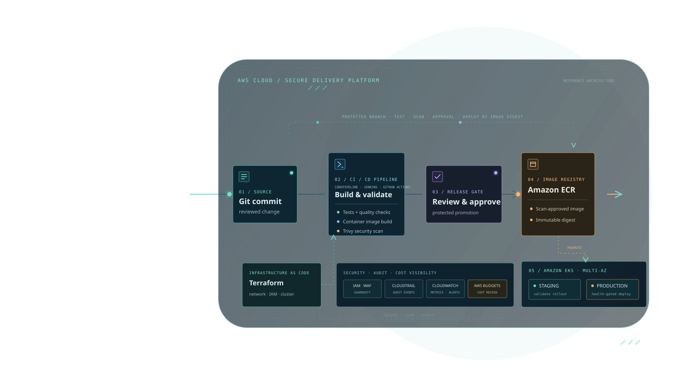

Infrastructure as code
Reusable building blocks and clear environment boundaries.

CLOUD INFRASTRUCTURE / PLATFORM ENGINEERING
Senior Platform Engineer
Secure cloud foundations.
Cost-aware infrastructure.
Reliable, faster delivery.
AWS DevOps and platform engineering, grounded in six years of IT experience and five years focused on AWS cloud engineering. Security, cost optimization, and reliable delivery from infrastructure to deployment.
AWS · Amazon EKS · Terraform · Kubernetes · Docker · Jenkins · GitHub Actions · Prometheus · Grafana · Python
ABOUT ME
Secure cloud platforms, from network foundations to the developer workflow.
I’m Manoj Siriparthi, a Senior Platform Engineer with 6 years of overall IT experience, including 5 years specializing in AWS DevOps and cloud engineering.
My expertise lies in designing and automating scalable cloud infrastructure, building Kubernetes platforms, developing CI/CD pipelines, and improving system reliability through Infrastructure as Code and observability.
I work with AWS, Amazon EKS, Kubernetes, Docker, Terraform, Jenkins, GitHub Actions, Prometheus, Grafana, Python, and Shell scripting, with a strong focus on cloud networking, IAM, security, and infrastructure automation.
Beyond infrastructure and deployment automation, I’m interested in AI-driven engineering solutions, including RAG-based document intelligence, streaming analytics, and AI-assisted incident management that helps teams investigate failures and make better-informed decisions.
My approach is centered on building secure, reliable, and maintainable platforms that reduce manual effort, improve deployment consistency, and provide better visibility into system performance.
My goal is simple: automate intelligently, engineer for reliability, and build cloud platforms that scale with business needs.
Reusable building blocks and clear environment boundaries.
Automated checks, deliberate rollout, and recovery paths.
Signals and context that help people investigate with confidence.
AREAS OF FOCUS
A working map of the cloud, delivery, runtime, and operational systems I build with.
AWS compute, storage, networking, messaging, security, and monitoring services.
Repeatable infrastructure provisioning and environment management.
Container workloads, cluster foundations, and operational troubleshooting.
Build, test, scan, publish, deploy, and verify software changes.
Metrics, alerting, dashboards, and the context needed to troubleshoot.
Operational helpers and human-reviewed AI workflows.
Skills listed describe areas of experience and technical focus, not a certification or proficiency ranking.
PROJECT PORTFOLIO
Five technical case studies. Every architecture is presented as a reference design until implementation evidence is added.
OPEN TO THE RIGHT CHALLENGE
I’m interested in conversations about platform engineering, AWS infrastructure, DevOps, and reliability-focused work.
config.js to enable contact links.